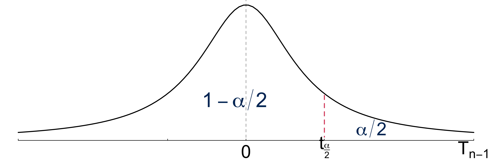

Probability and Statistics 🎲
MATH 4780/MSSC 5780 Regression Analysis
Binomial Probability Distribution
\(P(Y = y; n, \pi) = \frac{n!}{y!(n-y)!}\pi^y(1-\pi)^{n-y}, \quad y = 0, 1, 2, \dots, n\)

Poisson Probability Distribution
\(Y \sim Poisson(\lambda)\)
\(Y\) has no upper limit. The graph is truncated at \(y = 24\).


Statistics Comes In
Suppose each data point \(Y_i\) of the sample \((Y_1, Y_2, \dots, Y_n)\) is a random variable from the same population whose distribution is \(N(\mu, \sigma^2)\), and \(Y_i\)s are independent each other: \[Y_i \stackrel{iid}{\sim} N(\mu, \sigma^2), \quad i = 1, 2, \dots, n\]

Standard Errors
- The standard error is the estimated standard deviation of an estimator.
- give us a sense of our uncertainty about the quantity of interest.
- The estimator \(\overline{Y}\) has the standard error \(\frac{\sigma}{\sqrt{n}}\).
- give us a sense of our uncertainty about \(\mu\).

\((1-\alpha)100\%\) Confidence Interval for \(\mu\): Probability
\[P\left(\mu-t_{\frac{\alpha}{2}, n-1}\frac{S}{\sqrt{n}} < \overline{Y} < \mu + t_{\frac{\alpha}{2}, n-1}\frac{S}{\sqrt{n}} \right) = 1-\alpha\]
Is the interval \(\left(\mu-t_{\frac{\alpha}{2}, n-1}\frac{S}{\sqrt{n}}, \mu + t_{\frac{\alpha}{2}, n-1}\frac{S}{\sqrt{n}} \right)\) our confidence interval?

No! We don’t know \(\mu\), the quantity we’d like to estimate! But we almost there!
\((1-\alpha)100\%\) Confidence Interval for \(\mu\): Formula
\[\begin{align} &P\left(\mu-t_{\frac{\alpha}{2}, n-1}\frac{S}{\sqrt{n}} < \overline{Y} < \mu + t_{\frac{\alpha}{2}, n-1}\frac{S}{\sqrt{n}} \right) = 1-\alpha\\ &P\left( \boxed{\overline{Y}- t_{\frac{\alpha}{2}, n-1}\frac{S}{\sqrt{n}} < \mu < \overline{Y} + t_{\frac{\alpha}{2}, n-1}\frac{S}{\sqrt{n}}} \right) = 1-\alpha \end{align}\]
- With sample data of size \(n\), \(\left( \overline{y}- t_{\frac{\alpha}{2}, n-1}\frac{s}{\sqrt{n}}, \overline{y} + t_{\frac{\alpha}{2}, n-1}\frac{s}{\sqrt{n}} \right)\) is our \((1-\alpha)100\%\) CI for \(\mu\).
Both Methods Lead to the Same Conclusion